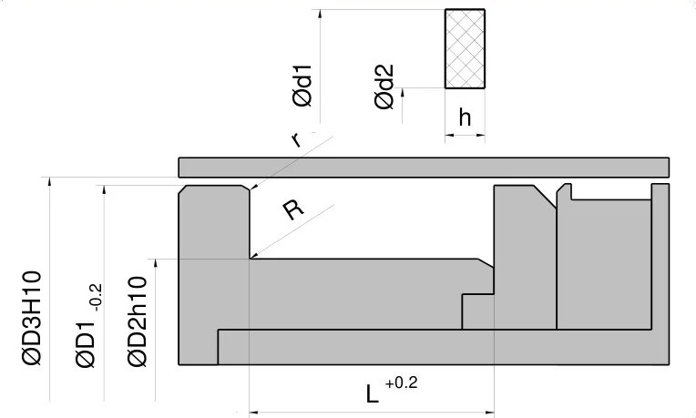

Pierścień oporowy
PO
Pierścień PO jest stosowany wspólnie z uszczelnieniem DS lub DSn. W zależności od typu siłownika pierścienie stosuje się z jednej strony uszczelki lub po obu stronach. Jako osobny element nie występuje.
Zamawianie: d1 x d2 x h, np. PO 120 x 100 x 5
Parametry pracy
- Temperatura pracy
- -30 ÷ +110 °C
- Prędkość ruchu
- do 0,5 m/s
- Medium
- oleje mineralne; emulsje olejowo-wodne HFA, HFB, HFC; wodny roztwór glikolu etylowego, np. Polikon Test
Konstrukcja
- Materiał
- POM
- Cechy
- wysoka odporność na ścieranie; dobre właściwości przy pracy bez smarowania; duża wytrzymałość na ściskanie; odporność na substancje chemiczne
Typoszereg PO
Tolerancje gniazda: ØD3 H10, ØD2 h10, ØD1 -0,2, L +0,2.
24 rozmiarów w typoszeregu
Tabelę można przesuwać w bok. Kolumna z oznaczeniem zostaje na miejscu.
| Oznaczenie | Pierścień | Gniazdo (zabudowa) | |||||||
|---|---|---|---|---|---|---|---|---|---|
| d1średnica zewnętrzna | d2średnica wewnętrzna | hszerokość uszczelki | D1średnica zewnętrzna | D2średnica wewnętrzna | D3średnica cylindra | Lszerokość gniazda | Rpromień wewnętrzny | rpromień zewnętrzny | |
| PO 75 x 55 x 5 | 75 | 55 | 5 | 73,6 | 55 | 75 | 31 | 0,5 | 0,2 |
| PO 75,8 x 71 x 3 | 75,8 | 71 | 3 | 75 | 71 | 75,8 | 3 | 0,5 | 0,2 |
| PO 90 x 70 x 5 | 90 | 70 | 5 | 89 | 70 | 90 | 31 | 0,5 | 0,2 |
| PO 90 x 75 x 5 | 90 | 75 | 5 | 89 | 75 | 90 | 31 | 0,5 | 0,2 |
| PO 110 x 95 x 5 | 110 | 95 | 5 | 108,5 | 95 | 110 | 31 | 0,5 | 0,2 |
| PO 120 x 100 x 5 | 120 | 100 | 5 | 118,5 | 100 | 120 | 36 | 0,5 | 0,2 |
| PO 135 x 110 x 5 | 135 | 110 | 5 | 133,5 | 110 | 135 | 43 | 0,5 | 0,2 |
| PO 160 x 135 x 5 | 160 | 135 | 5 | 158,5 | 135 | 160 | 43 | 0,5 | 0,2 |
| PO 161 x 135 x 5 | 161 | 135 | 5 | 159,5 | 135 | 161,2 | 43 | 0,5 | 0,2 |
| PO 170 x 145 x 5 | 170 | 145 | 5 | 168,5 | 145 | 170 | 43 | 0,8 | 0,2 |
| PO 125 x 115,8 x 2 | 125 | 115,8 | 2 | 124 | 115,8 | 125 | 2 | 0,8 | 0,2 |
| PO 120 x 110,8 x 3 | 120 | 110,8 | 3 | 119 | 110,8 | 120 | 3 | 0,8 | 0,2 |
| PO 200 x 175 x 5 | 200 | 175 | 5 | 198,5 | 175 | 200 | 43 | 0,8 | 0,2 |
| PO 202,5 x 175 x 5 | 202,5 | 175 | 5 | 198,5 | 175 | 202,5 | 43 | 0,8 | 0,2 |
| PO 203,8 x 175 x 5 | 203,8 | 175 | 5 | 198,5 | 175 | 203,8 | 43 | 0,8 | 0,2 |
| PO 205 x 175 x 5 | 205 | 175 | 5 | 198,5 | 175 | 205 | 43 | 0,8 | 0,2 |
| PO 240 x 228,8 x 3,5 | 240 | 228,8 | 3,5 | 238,5 | 228,8 | 240 | 3,5 | 0,8 | 0,2 |
| PO 250 x 220 x 5 | 250 | 220 | 5 | 248,5 | 220 | 250 | 49 | 1 | 0,2 |
| PO 252,5 x 220 x 5 | 252,5 | 220 | 5 | 248,5 | 220 | 252,5 | 49 | 1 | 0,2 |
| PO 255 x 220 x 5 | 255 | 220 | 5 | 248,5 | 220 | 255 | 49 | 1 | 0,2 |
| PO 280 x 255 x 6 | 280 | 255 | 6 | 278,5 | 255 | 280 | 32 | 1 | 0,2 |
| PO 290 x 278,8 x 4 | 290 | 278,8 | 4 | 288,5 | 278,8 | 290 | 4 | 1 | 0,2 |
| PO 320 x 290 x 5 | 320 | 290 | 5 | 318,5 | 290 | 320 | 32 | 1 | 0,2 |
| PO 321 x 290 x 5 | 321 | 290 | 5 | 318,5 | 290 | 321,2 | 32 | 1 | 0,2 |
Tego rozmiaru nie ma w typoszeregu. Prosimy o zapytanie z wymiarami gniazda.
Wymiary w mm według karty katalogowej KT-PO01, wartości w nawiasach jak w karcie. Typoszereg zostanie uzupełniony o kolejne rozmiary.